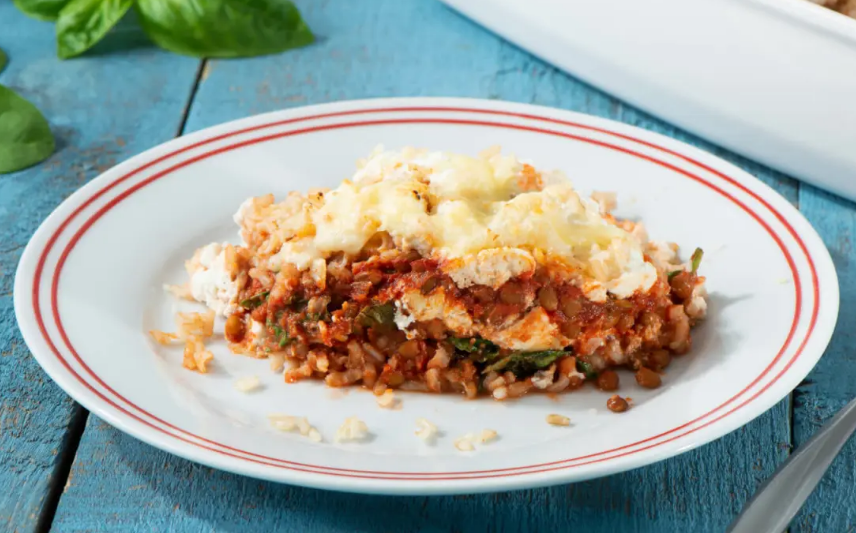

Lasagna

Description
Impress your entire family tonight with this flavorful, vegetarian lasagna! With three cheeses, Minute® Instant Brown Rice and lentils mixed with marinara and chopped basil, it’s bursting with gooey goodness the whole family will love.
Ingredients
- 3 cups Minute® Brown Rice
- 1 jar (24 oz) sauce
- 1 can (19 oz) lentils, drained and rinsed
- 2 cups chopped fresh spinach
- 2 cups shredded mozzarella cheese, divided
- 2 cups ricotta cheese, divided
- 3/4 cup grated Parmesan cheese, divided
Steps
- Preheat oven to 400˚F. Prepare rice according to package directions.
- Meanwhile, stir together marinara sauce, lentils, spinach, oil and basil in a medium bowl.
- Spread 1/2 cup lentil mixture in the bottom of a greased 9×13-inch baking dish. Layer one third of rice over top. Layer with half the remaining lentil mixture, 1/2 cup mozzarella cheese, 1 cup ricotta cheese and 1/4 cup Parmesan cheese. Repeat layers one more time. Top with remaining rice, remaining mozzarella and Parmesan cheeses.
- Cover with foil and bake for 20 minutes. Remove foil and bake for an additional 15-20 minutes, or until golden brown and heated through. Let stand 10 minutes before slicing.